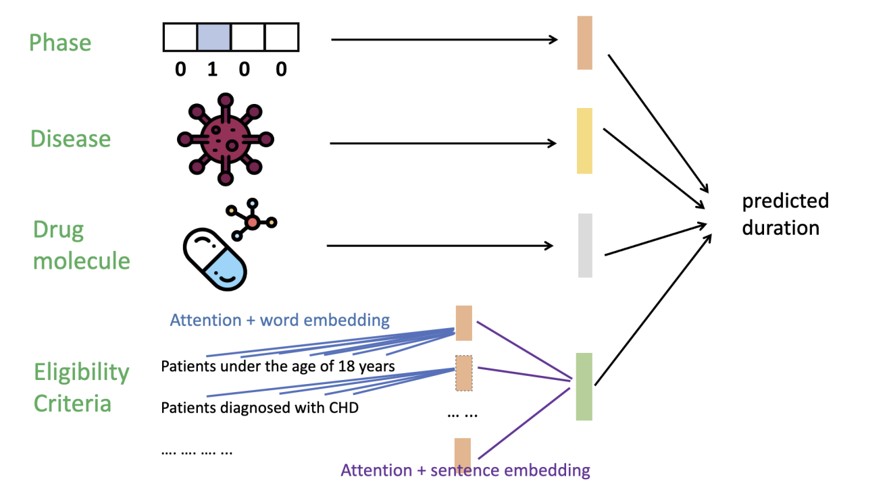

Architecture
Hierarchical Attention Transformer (TrialDura)
Bio-BERT embeddings + hierarchical attention over eligibility criteria + regression head

1 Bio-BERT Embeddings
Drug names and disease codes are embedded with Bio-BERT into 768-D vectors
(token embeddings averaged). Eligibility criteria sentences use the Bio-BERT CLS token embedding.
2 Hierarchical Attention for Eligibility Criteria
Word-/token-level signals build sentence embeddings; a transformer attention block captures
sentence-to-sentence relationships across inclusion and exclusion criteria to form a paragraph-level representation.
3 Multimodal Concatenation
Phase (one-hot) + drug embedding + disease embedding + eligibility embedding are concatenated
into a unified representation for prediction.
4 MLP Regression Head
A multi-layer perceptron predicts continuous trial duration (years), trained using Mean Squared Error (MSE).

Table 1: Example Clinical Trial Record
A concrete trial instance illustrating the multimodal inputs used by
TrialDura, including trial phase, disease (ICD-coded),
drug molecules, and structured eligibility criteria (inclusion/exclusion).
Start date, completion date, and derived duration serve as supervision
for regression modeling.